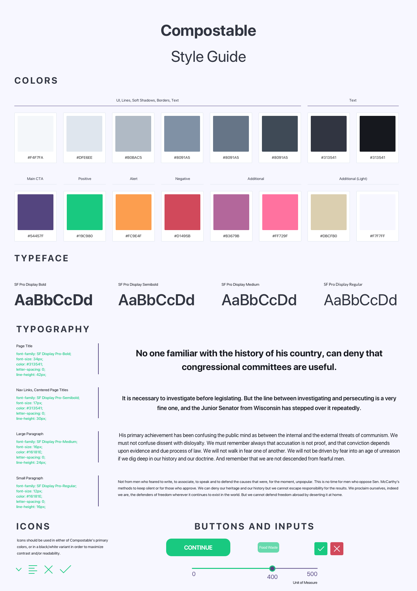

Compostable: Design Prototype

Click through my medium fidelity prototype here!
Design Problem Context
As part of my Intro to Interaction Design course at the University of Michigan, my classmates and I were directed to brainstorm possible solutions to problems experienced by a particular neighborhood. I had spent a good portion of my life in Ann Arbor, and so I chose to focus on a problem that a deep level of understanding of the community had made me privy to. Ann Arbor may not be a huge community, but it is a vibrant one and as such is an area that produces a high volume of compostable waste through businesses and restaurants. In the end, my solution became creating a mobile application that allows user to simultaneously find farms or composters that they can donate compostable waste to; as well as discover local places that they can buy healthy produce, dairy, or meat at.
Tools
For this project, I made use of a variety of tools in order to develop an interactive system I thought would most effectively divert waste from businesses and restaurants to the compost piles that need their compostable matter.
Competitive Analysis
Sketches/Storyboards
Personas
{kind=link}
{kind=link}
{kind=link}
Storymap

Solution
After these tools were developed I was able to implement my solution as a mobile application that matches businesses/restaurants with farmers who want to make use of their compostable waste. Think of it like Tinder, except for farmers!
But I didn't stop there...
Once I had created a medium fidelity prototype of Compostable I wanted to continue developing the idea by creating a design system for a working application. Establishing a visual design language would eventually allow for a much more streamlined creation of high fidelity mockups of what I wanted Compostable to be.
Which led to these high fidelity mockups
What I learned
Creating a working interactive system is not simply placing elements on a screen and setting your users loose in an untested environment. I made use of research, testing, interviews and deep design thinking in order to iterate towards a product that could actually make an impact in the lives of the users it was meant to help. Learning that minute details of the visual design of an interactive system are as important as high level functionality was a watershed moment for me. Considering the look and feel of interactions from both high and surface level perspectives is something I will take with me to all of my future designs.